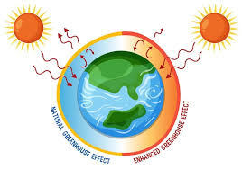

Wat is klimaatverandering?
Klimaatverandering betekent dat het klimaat op aarde op de lange termijn verandert. Op dit moment gaat het vooral om de stijging van de gemiddelde temperatuur op aarde. Die opwarming ontstaat door het versterkte broeikaseffect.
Het natuurlijke broeikaseffect is noodzakelijk. Zonder dat effect zou de aarde te koud zijn voor veel leven. Het probleem ontstaat wanneer er door menselijke activiteiten extra broeikasgassen in de atmosfeer komen. Dan wordt meer warmte vastgehouden dan normaal.
Versterkt broeikaseffect
Het versterkte broeikaseffect ontstaat vooral door een toename van koolstofdioxide, maar ook door andere broeikasgassen. Bij verbranding van fossiele brandstoffen komen grote hoeveelheden CO2 vrij. Deze extra uitstoot zorgt ervoor dat de warmte van de aarde verandert.
Klimaatverandering is dus geen tijdelijk probleem van één seizoen. Het is een langzame verschuiving in temperatuur, neerslag, windpatronen en extreme weersomstandigheden. Daardoor verandert ook de leefomgeving van organismen.

Waarom is dit belangrijk?
Wanneer het klimaat verandert, moeten planten, dieren en mensen zich aanpassen. Sommige soorten kunnen dat door adaptatie. Op lange termijn kan dit zelfs invloed hebben op evolutie. Soorten die zich niet goed aanpassen, lopen meer risico om uit te sterven. Daarom heeft klimaatverandering gevolgen voor biodiversiteit en ecosystemen.